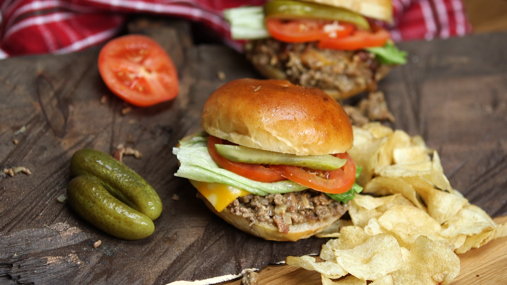

- トップ >
- チーズの特徴
チーズの種類と栄養素
-
特によく使われる種類についての紹介とそれぞれの特徴を知ることができます
-
チーズの大まかな特徴として、ナチュラルチーズとプロセスチーズに分かれます。
-
ナチュラルチーズは、できあがったのちに加熱処理を加えず、チーズ中に
乳酸菌や酵素、熟成の目的で添加したカビなどがそのまま残っているもので、
主にナチュラルチーズには、「白カビ」「青カビ」「セミハード」「ハード」などがある。

-
プロセスチーズは、チェダーやゴーダなどのナチュラルチーズが乳化した後に成形して殺菌状態で包装したもので、
日本では、「スライスチーズ」「6Pチーズ」「ベビーチーズ」「雪印北海道100チーズ」「さけるチーズ」などがある。
このページの先頭へ
栄養価について
-
チーズの種類によって栄養価が大きく異なっているため、それぞれ特有な味があるのも納得できます。
そこで、いくつか種類別に栄養価を見ていきます。
-
パルメザンチーズは、パスタやリゾット、ピザなどに使われています。また、エネルギーやカルシウム、タンパク質が最も高く全体的に栄養素が高いため積極的に料理に加える価値があります。
個人的には、トンカツやステーキなどのお肉と一緒に食べるのに適していると感じます。
-
チェダーチーズは、ナチュラルチーズでもセミハードのタイプでワインと一緒にそのまま食べることが多いです。
栄養価は全体的に高く、特にビタミンAやビタミンB2が比較的多く含まれており、カルシウムも多く含まれているため美味しく食べられるのではないでしょうか。
-
独特な強い香りと味で知られているブルーチーズですが、栄養価の高いチーズの一つでもあります。
食塩相当量が高い一方、ビタミンAやビタミンB2を多く含みカルシウムも高いためチェダーチーズと同様に、積極的におやつやおつまみとして食べれます。
このページの先頭へ